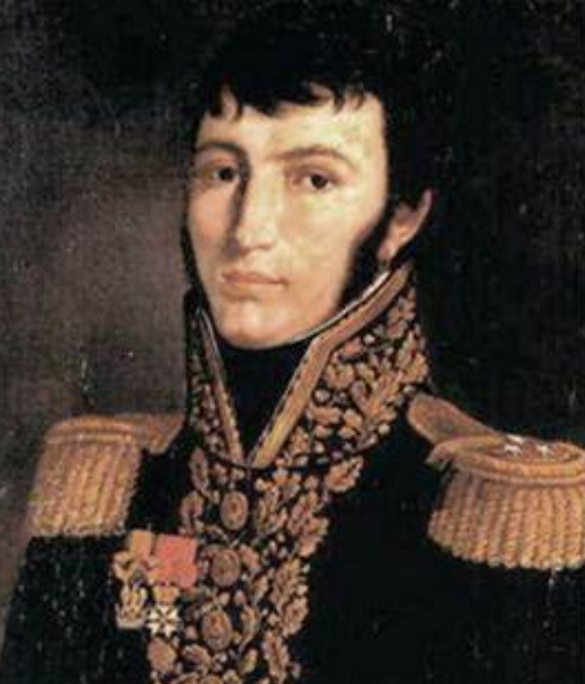
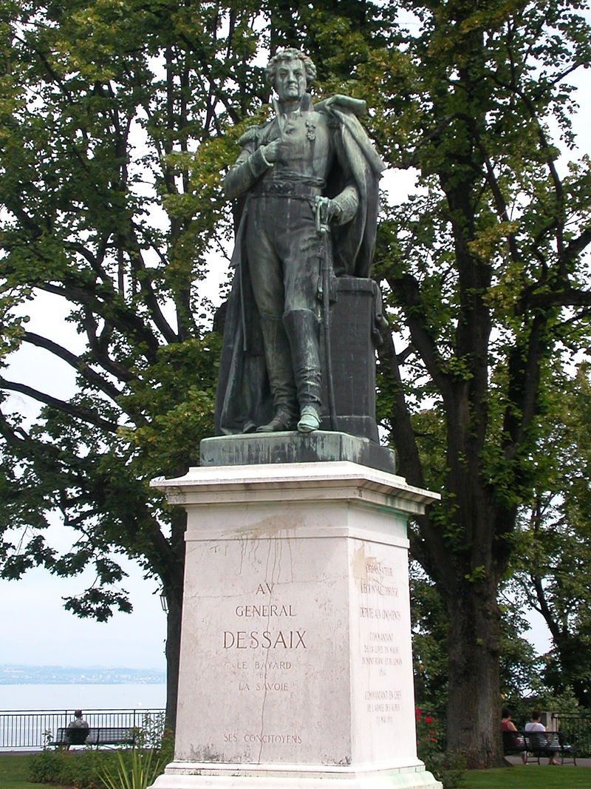
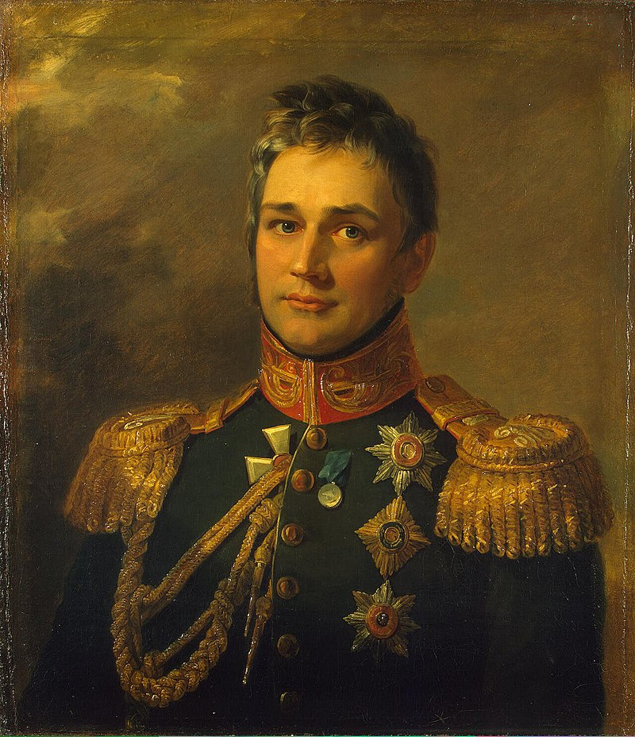
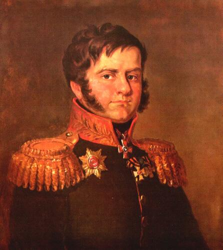
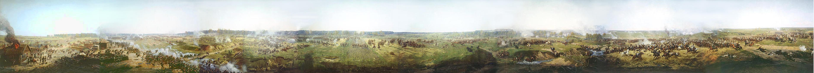
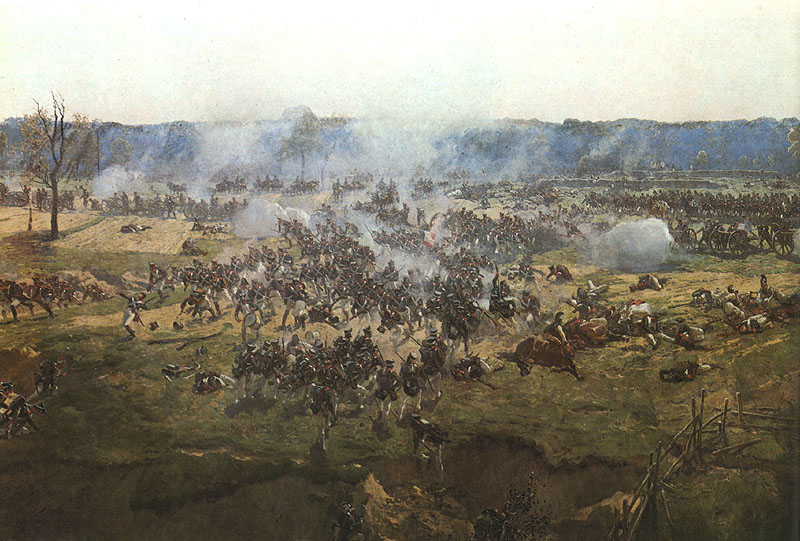
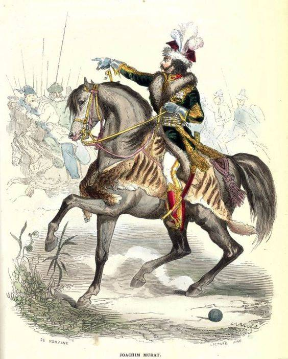

보로디노 전투 (5) - 바그라티온의 철각보
게시: 2020-08-24T06:30:21+09:00
전투는 오전 6시에 프랑스군의 대포가 불을 뿜으면서 시작되었습니다. 이에 대응하여 러시아군 포병대도 사격을 시작하며 보로디노 일대는 포성과 화약 연기로 뒤덮였습니다. 이때 러시아군의 대포 수는 637문, 프랑스군은 587문이었는데 특히 프랑스 포병대는 비교적 작은 구경의 경포들만을 보유하고 있었습니다. 따라서 러시아군의 포격이 훨씬 더 위력적이어야 했는데, 사실은 그러지 못했습니다. 신중한 쿠투조프는 약 300문의 대포를 전황에 따라 전개하겠다면서 후방에 예비대로 묶어 놓고 있었고, 전개된 337문의 대포도 아무런 공격이 진행되고 있지 않던 러시아 우익에 많이 집중되어 있었기 때문이었습니다. 그래서 약 150문의 러시아 대포만 열심히 대응 포격을 할 수 있었습니다. 프랑스군도 109문의 대포는 근위 포병대 소속으로서 셰바르디노 보루 근처에 예비대로 묶여 있었습니다만, 그래도 약 480문의 대포가 러시아군에 대해 훨씬 더 효율적인 포격을 퍼부을 수 있었습니다. 가령 러시아 방어선의 중심점인 라에프스키 보루에는 18문의 대포가 장착되어 있었는데, 언덕 위에 보이는 이 보루를 향해 프랑스 포병대는 집중 포격을 가하여 이 일대는 흙먼지가 마치 화산처럼 피어올랐습니다. 물론 여기의 러시아 포병들도 기죽지 않고 맹렬히 반격했습니다. 밀집 대형을 짜고 전진 신호를 기다리던 프랑스 병사들은 이렇게 빗발처럼 쏟아지는 포탄들을 한동안 고스란히 두들겨 맞고 서있어야 했습니다. 어떻게 보면 바보같은 일이긴 한데, 전체 병력이 일제히 공격에 나서기 위해서는 어쩔 수 없는 일이었습니다. 대포 사거리 밖에서 대오를 짓고 기다리는 것도 방법이긴 했는데, 그렇게 1~2km 멀리 떨어진 곳에서 대기하다 전진을 시작하자니 포탄을 뒤집어 쓰며 15~30분을 걷는 동안 대오가 흐트러지기 쉬웠으므로 그러는 것도 정답은 아니었습니다. 프랑스군의 공격을 기다리는 러시아군도 죽을 맛인 것은 마찬가지였습니다. 모든 러시아군이 보루와 철각보 뒤에 숨어 있었던 것이 아니라 일부 병력은 프랑스군 보병의 공격을 막아내기 위해 방벽 앞에 도열해 있었던 것입니다. 다행히 곧 전진 신호가 떨어졌고, 첫 공격은 프랑스군 좌익을 맡은 외젠의 군단이 시작했습니다. 델종(Alexis Joseph Delzons)이 이끄는 프랑스-크로아티아 사단을 선두로 한 이 공격은 보로디노 마을을 점거하고 있던 러시아 근위대의 엽병(jaeger)들을 쫓아냈고, 외젠 휘하 나머지 사단들도 콜로차 강을 건너 강가에 도열해있던 바클레이 휘하의 사단들을 격퇴했습니다. 아무래도 이탈리아 부왕인 외젠 휘하 사단들 답게 이탈리아인들이 많았던 이들은 '황제 폐하 만세'(Vive l'Empereur!)라는 프랑스어와 함께 '이탈리아 만세'(Viva Italia)를 외치며 용감히 싸웠습니다. 그러나 바클레이 휘하 러시아군도 만만치는 않아서 이들은 러시아군의 반격에 곧 다시 콜로차 강을 건너 쫓겨냐야 했는데, 이 정도의 고난에 굴하지 않고 외젠 군단은 다시 강을 건너 반격했습니다.

(델종(Alexis Joseph Delzons) 장군입니다. 나폴레옹보다 6살 어렸던 그는 일찍부터 나폴레옹 휘하 이탈리아 방면군에서 싸웠고 이집트 원정에도 참전하는 등 나폴레옹 계파 사람이었는데 이집트에서 돌아온 다음에야 준장으로 승진했습니다. 그는 1812년 모스크바에서 후퇴할 때 루즈하 강변에서 러시아군과 싸우다 머리에 총알을 2발 맞고 전사했습니다.) 이탈리아 병사들의 용감성과는 별도로, 누가 봐도 외젠이 이끄는 공격이 주공일 턱이 없었습니다. 진짜 주공은 예고된 대로 러시아 좌익을 향해 전개되었고 나폴레옹의 에이스인 다부가 이끌었습니다. 이건 바그람 전투와 똑같은 배치였는데, 아마 나폴레옹은 바그람 전투에서처럼 다부가 러시아 전선을 좌익부터 돌돌 말아올리기를 원했던 모양입니다. 다부의 공격은 바그라티온이 지키고 있던 철각보(fleche)들에게 집중되었는데, 시작부터 쉽지 않았습니다. 바그람 전투 때와는 달리 철저하게 수비 위주로 준비를 했던 러시아군 때문이었습니다. 원래 이 3개소의 철각보에는 좌우가 각각 12문과 5문, 그리고 중앙은 7문의 대포가 설치되어 있었고, 그 주변에도 28문이 추가로 설치되어 있었는데, 이렇게 막강한 화력은 시작부터 성과를 냈습니다. 선봉에 나섰던 드제(Joseph Marie Dessaix)와 콩팡(Jean Dominique Compans) 두 장군 중 콩팡이 일찌감치 러시아군 대포의 파편에 맞아 부상을 입고 쓰러질 정도였으니까요. 하지만 결국 프랑스군은 2개의 철각보 점령에 성공했고, 더 남쪽에서는 전날 쿠투조프가 매복 시켜놓았다가 베니히센이 벌판에 끄집어 펼쳐놓은 투치코프(Tuchkov)의 사단이 포니아토프스키의 폴란드 군단의 공격을 받고 격퇴되었습니다. 그러나 정말 러시아군은 만만한 상대가 아니었습니다. 곧 재정비를 마친 러시아군이 다시 반격에 나서서 남쪽 철각보를 재탈환했습니다. 물론 프랑스군도 그 명성을 고스톱으로 딴 것은 아니었습니다. 쓰러진 콩팡 대신, 전날 밤 나폴레옹의 천막에서 당직을 서느라 잠도 자지 못한 랍(Jean Rapp)이 지휘를 맡아 드제 장군과 함께 다시 반격에 나섰습니다. 이 반격에는 쥐노(Junot)와 네(Ney) 원수의 사단들도 동참했는데, 러시아군의 반격이 워낙 거세어 랍과 드제 모두가 부상을 입고 쓰러질 정도였습니다.

(드제(Joseph Marie Dessaix)는 사보이 출신으로서 원래 의대생이었으나 1789년 혁명이 발발하자 파리에서 국민방위군에 참여하면서 군문에 들어섰습니다. 그는 나폴레옹 휘하에서 싸워 리볼리 전투에서 적의 포로가 되기도 했지만, 의외로 나폴레옹의 브뤼메르 쿠데타 당시 500인회의 의원들 중 하나로서 나폴레옹의 쿠데타에 저항하기도 했습니다. 러시아 원정에 참전하기 전에는 외젠 밑에서 복무하면서 외젠의 이탈리아 방면군을 이끌고 바그람 전투에 참여했고, 나폴레옹의 백일천하에서도 나폴레옹 편에 섰습니다. 마렝고에서 죽은 드제와는 아무 상관이 없는 사람입니다.) 하지만 프랑스군이 더 많았고, 또 더 끈질겼습니다. 당시 그 두 개의 철각보는 보론초프(Mikhail Semyonovich Vorontsov) 대공이 약 4천의 최정예 척탄병 사단을 거느리고 지키고 있었는데, 전투의 첫 포성이 울린지 2시간인 오전 8시에 이미 그의 부대는 300명만 두 다리로 서있었고 약 100여명 되는 장교들 중에서는 3명만 부상을 입지 않은 상태였습니다. 물론 보론초프 대공 본인도 큰 부상을 입고 실려나간 뒤였고요. 결국 프랑스군은 이 두 개의 철각보를 빼앗습니다.

(보론초프(Mikhail Semyonovich Vorontsov) 대공입니다. 그는 당시 30세의 젊은 귀족으로서, 어릴 때는 영국 주재 러시아 대사였던 아버지 덕분에 런던에서 교육을 받았습니다. 그는 풀투스크 전투와 프리틀란드 전투에도 참전했었고, 이 보로디노 전투에서 입은 부상 때문에 전선에는 1813년에야 복귀할 수 있었습니다. 훗날 그는 1840~1850년대에 카프카즈, 그러니까 현재의 체첸에서 싸워 명성을 떨쳤습니다.) 그런데 2개라고요 ? 원래 철각보는 3개 아니었던가요 ? 맞습니다. 그런데 셰바르디노의 낮은 언덕에서 망원경으로 볼 때 이 세번째 철각보는 프랑스군의 눈에 띄지 않았습니다. 2시간의 피투성이의 혈전 끝에 2개의 철각보를 모두 점령한 프랑스군은 그때서야 비로소 그 뒤편에 3번째 철각보가 있다는 것을 알게 되었습니다. 철각보(fleche)는 앞쪽에만 방벽이 있을 뿐 뒤쪽으로는 아무 벽이 없이 뻥 뚫린 평지였기 떄문에, 이 2개의 철각보를 등지고 선 프랑스군은 3번째 철각보를 발판으로 퍼부어지는 러시아군의 총격과 포격을 그대로 뒤집어 써야 했습니다. 이렇게 대혼란에 빠진 프랑스군에게 네브로프스키(Dmitry Petrovich Neverovsky) 장군의 부대가 반격을 가했고, 다시 그 2개의 철각보는 러시아군의 수중에 떨어졌습니다.

(네베로프스키(Dmitry Petrovich Neverovsky)입니다. 스몰렌스크 전투 직전, 뜻 밖에 강을 건너온 뮈라의 기병대를 맞아 보병 방진을 짠 채로 하루 종일 기병들의 공격을 견뎌가며 스몰렌스크까지 철수한 부대의 지휘관이 바로 이 네베로프스키였습니다. 그는 보로디노 전투에서 타박상을 입었으나 자리를 지켰고, 다음 해인 1813년 라이프치히 전투에서 치명상을 입고 결국 전사합니다.) 이렇게 3개의 철각보(나중에 '바그라티온의 철각보'라고 불립니다)를 둘러싼 전투는 그 이후로도 3시간 동안 더 진행되었고, 그 주인이 최소한 7번은 바뀔 정도로 치열했습니다. 쿠투조프도 증권군을 보냈습니다. 7시에는 3개 근위 연대와 3개 흉갑기병 연대, 8개 척탄병 대대, 그리고 36문의 포병대를 파견했고, 다시 8시에는 100문의 포병대와 함께 보병 여단을 보냈습니다. 9시에는 제4 보병 사단과 함께 제2 기병 군단을 밀로라도비치(Miloradovich) 장군의 지휘 하에 보냈습니다. 이렇게 점점 증강이 되다보니 아침 6시에는 1만8천이었던 '바그라티온 철각보' 수비대는 3만이 넘게 되었고 포병대도 무려 3백문이 넘게 되었습니다. 프랑스군도 처음부터 다부, 네, 쥐노, 거기에 뮈라의 기병대까지 뛰어들어서 5만의 병력에 2백문이 넘는 화력이 집중되었습니다. 러시아군으로서는 아쉬웠던 것이 처음부터 강력한 수비대로 반격을 하지 못하고 조금씩 시간차를 두고 병력들이 축차 투입되었다는 점이었습니다. 그에 비해 프랑스군은 처음부터 이 곳에서 승부를 결정짓는다며 병력을 집중하여 훨씬 치열한 공격을 퍼부었습니다. 이 곳을 공격하다 일찌감치 쓰러졌던 랍은 군 생활 중 총 25번의 부상을 입을 정도로 자주 부상을 당했는데, 이는 전투에서 물불을 가리지 않는 그의 용기를 보여주는 징표였습니다. 그런 랍이 '이런 살육전은 정말 난생 처음'이라고 혀를 내두를 정도로 이 바그라티온 철각보에서의 전투는 정말 치열했습니다. 좁은 지형에 양측 총 7만, 대포 5백문이 불을 뿜어대니 정말 그럴 만 했습니다. 머스켓 소총의 총강이 화약 그을음으로 더러워져 더 이상 장전봉으로 총알을 쑤셔 넣는 것이 어려울 정도로 총알이 빗발치듯 쏟아지고, 쉴사이 없이 양측의 캐니스터 산탄이 오고가며 대기를 꽉 채웠습니다. 뭐 어느 전투는 그러지 않았겠느냐 라고 생각할 수도 있겠지만, 확실히 이 철각보 전투는 남다른 바가 있었습니다. 이렇게 좁은 지역에서 토목 공사로 구축된 진지를 사이에 두고 양측이 굽히지 않고 병력을 쏟아부으며 소모전을 벌이는 일은 여태까지의 나폴레옹 전쟁에서는 찾아보기가 어려웠던 일입니다. 가령 레겐스부르크(Regensburg, Ratisbon) 전투처럼 요새를 공략하는 전투에서는 요새를 수비하는 측의 병력이 훨씬 작았기 때문에 이렇게까지 거대한 살륙이 일어나지는 않았습니다.

(프란츠 로보(Franz Raubaud)라는 19세기말 러시아 화가가 그린 보로디노 전투의 파노라마 형태의 긴 그림입니다.)

(프란츠 로보의 보로디노 전투화 중 바그라티온 철각보 앞에서 벌어진 기병전 모습입니다. 철각보의 모습은 오른쪽 윗부분 먼 배경에 보입니다.) 그러다보니 이 곳에서는 많은 사상자가 발생했습니다. 랍, 콩팡과 드제는 물론이고 다부까지 부상을 입고 쓰러졌다가 다시 말을 타고 나와 현장을 지휘할 정도였으니까요. 특히 눈에 띄는 것은 뮈라였습니다. 랍이 자주 부상을 당한 것이 그의 용기를 입증해주는 것이라면, 뮈라는 사실 용기를 입증할 필요가 아예 없을 정도로 겁이 없는 사내였습니다. 그는 거의 언제나 기병 돌격을 선두에서 직접 지휘했는데, 그때마다 투르크 풍의 화려한 의상과 호랑이 가죽 말안장 깔개 등으로 누구라도 '저게 뮈라다'라고 알 수 있을 정도였습니다. 따라서 당연히 모든 러시아군이 그의 화려한 깃털 모자에 대고 총을 쏘았고 대포알도 그를 향해 끊임없이 날아갔는데, 언제나 그렇 듯 군신의 보호를 받는 그는 털 끝 하나 다치지 않고 그야말로 전투 요정처럼 이리저리 말을 달렸습니다. 그렇게 투지가 살아있는 지휘관들 덕분인지, 확실히 프랑스군의 사기와 집중력이 러시아군을 압도한다는 것이 시간이 갈 수록 분명해졌습니다. 4번째인가 5번째인가로 프랑스군이 다시 철각보를 빼앗겠다고 대오를 정돈하고 밀려오자, 그 장엄하고 결연한 모습에 프랑스군이라면 정말 극혐했던 바그라티온조차도 '브라보'를 외치며 박수를 쳐주었다고 하니까요. 그러나 이제 이 철각보 전투도 끝이 날 순간이 다가오고 있었습니다.

(나폴리 왕 뮈라입니다. 그의 용감성과 함께 아무리 빗발치는 총탄 속에서도 다치지 않는 행운에는 뭔가 신성한 면까지 있어서, 나중에 모스크바에서 철수하는 과정 중에서도 그 뒤를 추격하던 카자흐 기병들은 그를 보면 경외에 찬 공손한 모습을 보이며 그에게는 근접하지 않았다고 합니다. 허풍선이 뮈라가 그런 모습을 보며 얼마나 더 뻐기고 다녔을 지는 안 봐도 비디오입니다.) Source : 1812 Napoleon's Fatal March on Moscow by Adam Zamoyski
en.wikipedia.org/wiki/Estimates_of_opposing_forces_in_the_Battle_of_Borodino
napoleonistyka.atspace.com/Borodino_battle.htm
en.wikipedia.org/wiki/Alexis_Joseph_Delzons
en.wikipedia.org/wiki/Mikhail_Semyonovich_Vorontsov
rusgenerals.oooprog.ru/index.php?id=neverovsky
en.wikipedia.org/wiki/Franz_Roubaud